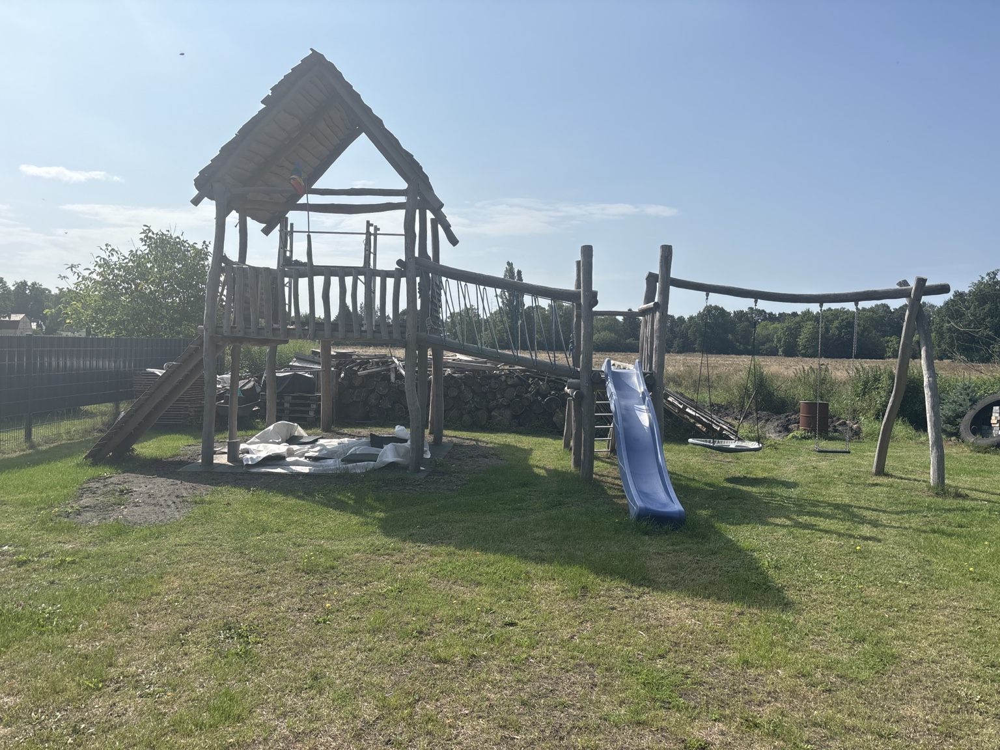

Familien-Spielplatz
Ein wachsendes Spielplatzprojekt und ein Ursprungsgedanke von TRISSI.

Ausgangspunkt
Der Wunsch war ein eigener Spielplatz für die Kinder. Nicht klein, nicht beliebig und nicht aus dem Katalog. Es sollte etwas entstehen, das zum Grundstück, zur Familie und zu den Kindern passt.
Die eigentliche Frage
Am Anfang stand nicht nur die Frage: Welchen Spielplatz kaufen wir? Die eigentliche Frage war: Wie kann aus einer großen, vielleicht etwas verrückten Idee eine machbare Lösung werden?
Herausforderung
Ein Spielplatz für Kinder muss mehr können als gut aussehen. Er soll spannend sein, verschiedene Wege anbieten und immer wieder neue Spielideen zulassen. Gleichzeitig muss die Konstruktion sinnvoll geplant, stabil aufgebaut und erweiterbar gedacht werden.
Lösungsansatz
Als Material wurde Robinie gewählt, weil sie sehr langlebig ist und durch ihre natürliche Form gut zum gewünschten Charakter passt. Natürlich gewachsene Holzstämme prägen die Wirkung. Das Konzept sieht verschiedene Wege nach oben vor und verbindet mehrere Spielbereiche miteinander.
Warum dieses Projekt zu TRISSI passt
Dieses Projekt zeigt, warum TRISSI gebraucht wird. Nicht immer sucht man jemanden, der einem alles abnimmt. Manchmal braucht man jemanden, der die Idee sortiert, Risiken ehrlich anspricht, Möglichkeiten zeigt und bei Bedarf unterstützt.
Aktueller Stand
Das Projekt ist noch nicht abgeschlossen. Es wächst mit neuen Ideen weiter. Eine aufklappbare Rückwand, die als Balkon dienen kann, und eine mögliche zweite Etage zeigen, wie ein Projekt schrittweise weitergedacht werden kann.
Ergebnis
Manchmal braucht man niemanden, der einem die Idee ausredet. Man braucht jemanden, der sie ernst nimmt und prüft, wie sie machbar wird.
Bilder zum Projektbeispiel
{kind=link}
{kind=link}
{kind=link}
{kind=link}
{kind=link}
{kind=link}
Schildere dein Anliegen.
TRISSI schaut sich dein Problem, deine Idee oder deinen Wunsch an und prüft, welcher Weg sinnvoll ist.
Fotos, Maße, vorhandene Materialien, gewünschte Funktion, Einschränkungen und erste Ideen.